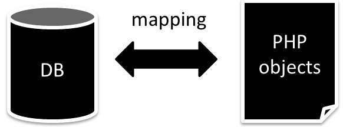
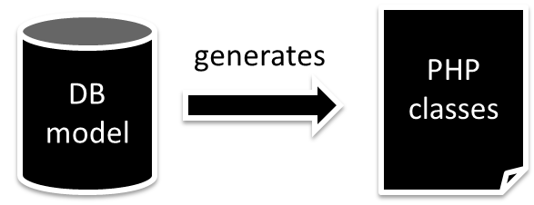
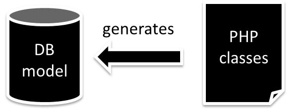
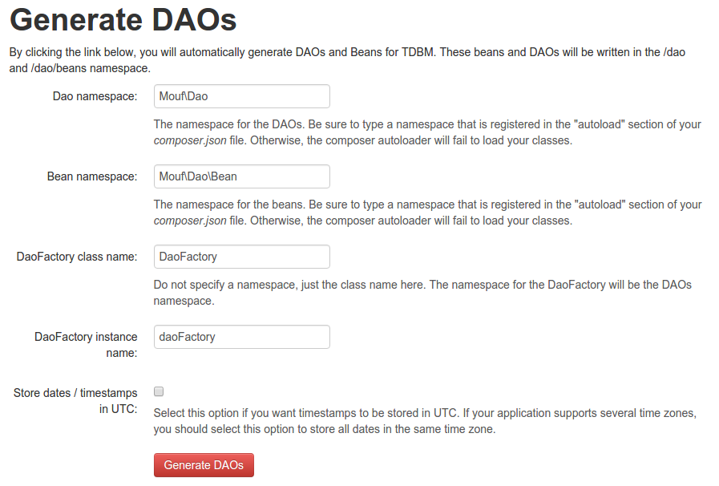

What is an ORM?
An ORM is a library that maps your database records to your objects.

There are actually two kinds of ORMs
In some libraries, everything starts with the database model.

This is sometimes called "ActiveRecord ORMs".
TDBM is part of this category. It's maybe the most advanced ORM when it comes to understanding your data model and translating it to actual PHP classes.
There are actually two kinds of ORMs
In other libraries, everything starts with the PHP classes.

Doctrine ORM is (somewhat) part of these tools.
Active records... the pros and the cons
Great for migrating an existing application
The data model is already available
Objects inherit a base class from the ORM
The objects are not owned by the application developer. They are ultimately owned by the ORM tool.
This can have impacts when migrating from one version to another.
Not ideal for DDD
If you are into Domain Driven Development, you will have to write your domain classes once, and map them to the classes of the ORM. This means 2 classes for the same model. Do not do that. If you have a complex model and want to do DDD, use Doctrine!
Great for performance
Since the objects are owned by the ORM tool, the ORM can apply strong optimizations technique to these objects.
Great for simple to medium-sized projects
Active records (and TDBM in particular) works great for simple to medium-sized projects where your database structure maps closely your screens structure (CRUD design)
For more complex projects, use Doctrine ORM.
TDBM philosophy
Your database model is meaningful. TDBM will do its best to understand it and to generate the object model that maps your database model as closely as possible.
A bit of vocabulary
-
Bean: A bean is a PHP class that maps a table row. There is ~ one class per table. For instance, the
UserBean class will map the users table. Aka entities in Doctrine ORM.
-
DAO: A DAO is a PHP service class that contains method to access beans. There is ~ one DAO per table. For instance, the
UserDao contains methods to access the users table. Aka repositories in Doctrine ORM.
A bit of vocabulary
-
TDBMService: The main class of TDBM. It contains all the logic. In TDBM, you never use the
TDBMService directly. Instead, you use DAOs.
-
DAOFactory: A simple utility class that refers all DAOs. Use with care.
A bit of vocabulary
-
DBALConnection: The TDBMService uses a Doctrine DBAL (Doctrine Database Abstraction Layer) to connect to the database. It makes TDBM available on all platforms supported by Doctrine (i.e. almost all databases out there).
Generating DAOs and Beans
In TDBM 4.0, the easiest way to generate DAOs and Beans is through the Mouf UI.

##Generating DAOs and Beans
Alternatively, if you are not using Mouf, you can use the `TDBMService::generateAllDaosAndBeans()` method.
##Generating DAOs and Beans
In TDBM 4.1, I plan to add a Symfony 2 console command too, and more integration with other frameworks.
##Creating a bean
```php
$john = new PersonBean('John Doe', new DateTime());
// Write values:
$john->setName('John Wayne');
// Read values:
$name = $john->getName();
$personDao->save($john);
```
You use the constructor to build your bean. All not nullable columns are parameters in the constructor.
TDBM will generate for you getters and setters.
SQL date columns are converted to PHP `DateTime` objects.
SQL enum columns are not supported yet (coming in TDBM 4.1).
##Getting a bean by ID
```php
// Let's get the bean
$person = $personDao->getById(1);
// Let's display the name
echo $person->getName();
```
Supports multi-column primary keys (pass an array of column=>values).
##Getting all beans of a table
```php
// Let's get the list of users
$userList = $userDao->findAll();
// Let's display the names
foreach ($userList as $userBean) {
/* @var $userBean UserBean */
echo $userBean->getName()."\n";
}
```
##Filtering beans
```php
class CountryDao extends CountryBaseDao
{
/**
* Returns the list of countries starting with $firstLetter
*
* @param string $firstLetter
* @return CountryBean[]
*/
public function getCountriesByLetter($firstLetter) {
return $this->find(
"label LIKE :label",
[ "label" => $firstLetter.'%' ]);
}
}
```
The `CountryDao` class can safely be edited. Never edit the `CountryBaseDao` as it is regenerated by TDBM
on every DB model change.
##Filtering beans
**Important!** The `find` method is `protected`. You should only call it from within DAOs.
This way, SQL code is restricted into the DAO and does not leak into the outside world.
##Filtering beans
**VERY IMPORTANT!** Never ever ever concatenate user input in the SQL string. Use parameters instead.
1. It is a security issue (SQL injection)
2. It prevents TDBM from caching the structure of the request and will lead to *extremely poor performance*
Understood?
#NEVER CONCATENATE SQL STRINGS!
```php
// BAD
$list = $this->find("name LIKE '".$firstLetter.'%"' );
// GOOD
$list = $this->find("label LIKE :label",
[ "label" => $firstLetter.'%' ]);
```
##Magic parameters
```php
class ProductDao extends ProductBaseDao {
public function getProductsByCategoryAndStore(
CategoryBean $category = null,
StoreBean $store = null) {
return $this->find(
"category_id = :category AND store_id = :store",
[
"category" => $category?$category->getId():null,
"store" => $store?$store->getId():null
]);
}
}
```
If the $category or $store is `null`, the `category_id` or `store_id` field will be completely discarded from the SQL.
##Magic parameters
If a parameter is `null`, the filter field is rewritten to remove the part of the query that contains the null value.
```
"category_id = :category AND store_id = :store",
[
"category" => 42,
"store" => null
]
```
will result in the SQL filter
```
category_id = 42
```
See how the `store_id` has disappeared?
##Getting only one record
If you are confident that your query will only ever return one record, then, you can use the `findOne` method instead of `find`.
```php
class UserDao extends UserBaseDao {
/**
* Returns a user by login
*
* @param string $login
* @return UserBean|null
*/
public function getUserByLogin($login) {
return $this->findOne("login = :login", [ "login" => $login ]);
}
}
```
##Indexes are your friend
TDBM detects indexes and generates DAO methods for you.
Here is a sample:
```sql
CREATE INDEX users_status_idx ON users (status);
```
The `users` table has an index on the `status` column.
Automatically, TDBM will generate a `findByStatus` method in the `UserBaseDao` class:
```
$users = $userDao->findByStatus('on');
```
##Unique indexes are your friend
But wait, there is more! What about unique indexes?
```sql
CREATE UNIQUE INDEX users_login_idx ON users (login);
```
TDBM will generate a `findOneByLogin` method:
```
$user = $userDao->findOneByLogin('alice');
```
Please note how a **unique** index generates a `findOneBy...` method instead of a `findBy...` method.
##Multi columns indexes are your friend
Finally, TDBM can also deal with multi-columns indexes, or indexes on foreign keys:
```sql
CREATE INDEX users_status_country_idx ON users (status, country_id);
```
This index on both the `status` and the `country_id` column will be turned into a `findByLoginAndCountry` method:
```
$country = $countryDao->getById(1);
$user = $userDao->findByLoginAndCountry('on', $country);
```
Notice how the parameter passed for the for foreign key is a bean and not an ID.
# Navigating the object model
## Many to one relationships

So what if I want to get the name of the country in which the first user is located?
```php
// Let's get the user bean
$userBean = $userDao->getById(1);
// Let's get the country bean
$countryBean = $userBean->getCountry();
// Let's display the country name
echo $countryBean->getName();
```
## Many to one relationships
Of course, there is also a setter:
```php
$userBean->setCountry($countryBean);
```
Notice how you set an object rather than an ID.
###One to many relationships

Ok. What, now, if I want to find a list of users from a particular country?
```php
// Let's get the country bean
$countryBean = $countryDao->getById(1);
// Let's get the users from that country
$userBeans = $countryBean->getUsers();
```
##Many to many relationships

TDBM can **automatically detect** pivot tables in your data model.
```php
// Getter
$rolesBean = $userBean->getRoles();
// Adder
$userBean->addRole($roleBean);
// Remover
$userBean->removeRole($roleBean);
// Check existence
$hasRole = $userBean->hasRole($roleBean);
```
##Many to many relationships
Pivot tables have **no DAO and no Beans** associated.
Many to many relationships are symmetrical. Therefore, you will find the same methods in the `RoleBean` class:
```php
// Getter
$usersBean = $roleBean->getUsers();
// Adder
$userBean->addUser($roleBean);
// Remover
$userBean->removeUser($roleBean);
// Check existence
$hasUser = $roleBean->hasUser($roleBean);
```
##Many to many relationships
Unlike in Doctrine, TDBM does not need to have a notion of *owning* and *inverse* side of a many to many relationship.
```php
$roleBean = new RoleBean("Admin");
$rightBean = new RightBean("CAN_ACCESS_EVERYTHING");
$roleBean->addRight($rightBean);
foreach ($rightBean->getRoles() as $role) {
echo $role->getName()."\n";
}
// Will display "Admin".
```
Works in TDBM only! Do not try the code above with a Doctrine entity... :)
##Simple joins
TDBM writes joins for you!
```php
class UserDao extends UserBaseDao {
public function getUsersByCountryName($countryName) {
// Behold the magic!
return $this->find(
"country.name LIKE :country",
[ 'country' => $countryName.'%' ] );
}
}
```
Here, we called the `find` method passing a filter on the `name` column of the `country` table.
Magic provided by [MagicQuery](http://mouf-php.com/packages/mouf/magic-query/README.md).
Works with **any** table of your data model (not only adjacent tables).
##Filtering by ID/bean
Most of the time, of course, you will not pass the name of the country but the ID of the country. Actually,
using TDBM you can just pass the object. Have a look!
```php
class UserDao extends UserBaseDao {
public function getUsersByCountry(CountryBean $countryBean) {
return $this->find($countryBean);
}
}
```
##Complex joins

So now, what if I want to find what rights the user "Robert Marley" has?
```php
class RoleDao extends RoleBaseDao {
public function getRolesForUser(UserBean $user) {
// Shazam!
return $this->find($user);
}
}
```
TDBM finds the shortest path between 2 tables and performs the join.
##Simplified filter syntax
Syntactic sugar: if your filter is only made of "=" and "AND" statements, you can use the shortcut "array" syntax in your queries.
Here, we filter a `products` table by `category_id` and `status`:
```php
class ProductDao extends ProductBaseDao {
public function getByCategoryAndStatus(
int $category_id, int $status)
{
return $this->find([
'category_id' => $category_id,
'status' => $status,
]);
}
}
```
Ordering
--------
You can get your results in a specific order using the third parameter of the `find` method:
```php
class UserDao extends UserBaseDao {
public function getUsersByAlphabeticalOrder() {
return $this->find(null, [], 'name ASC');
}
}
```
Paginating data with limits and offsets
---------------------------------------
The result of a `find` or `findAll` method is an iteratable object. This object can be paginated (it implements the Porpaginas interface).
If you want to limit the number of records returned, or start at a given offset, you can use the `take` method.
```php
$users = $userDao->findAll();
$page = $users->take(0, 10);
// Iterate only the first 10 records
foreach ($page as $user) {
// Do stuff...
}
```
Paginating data with limits and offsets
---------------------------------------
There are a number of very useful methods on result sets and pages:
```php
$users = $userDao->findAll();
echo "Total count: ".$users->count();
$page = $users->take(0, 10);
echo "Page count: ".$page->count();
echo "Total count: ".$page->totalCount();
// Cast to a simple array
$pageAsArray = $page->toArray();
```
Utility methods on result sets
------------------------------
You can get the first item of a result set with the `first` method:
```php
$users = $userDao->findAll();
$firstUser = $users->first();
```
Note: when you use the `first` method, TDBM appends `LIMIT 1 OFFSET 0` to your query to fetch
only one row. Also, the result set contains no result, `null` is returned.
Utility methods on result sets
------------------------------
You can directly apply a function to all elements of a result set:
```php
$users = $userDao->findAll();
$userNames = $users->map(function(UserBean $user) {
return $user->getName();
});
// $userNames is an array of names!
```
Array versus cursor result sets
-------------------------------
By default, result sets can be accessed as arrays:
```php
$users = $userDao->findAll();
echo $users[0]->getName;
```
For very large datasets, this would fill memory. Instead, use the cursor mode (fifth parameter of `find` method):
```php
class UserDao extends UserBaseDao {
public function getUsersInCursorMode()
{
return $this->find(null, [], null, [],
TDBMService::MODE_CURSOR);
}
}
```
Fetching multiple tables in one query
-------------------------------------
Sometimes, you want all users and you know you will need to fetch all countries associated.
In SQL, this can be done in one query.
```php
$users = $userDao->findAll();
foreach ($users as $user) {
echo $user->getCountry()->getName();
}
```
By default, each time you call the `getCountry()` method, TDBM will perform a query in database
if the country has not been fetched yet. It can be costly.
Fetching multiple tables in one query
-------------------------------------
Good news! You can ask TDBM to fetch the countries table while fetching the users (in the same query).
This is the 4th parameter of the `find method`:
```php
class UserDao extends UserBaseDao {
public function getUsersOptimized()
{
return $this->find(null, [], null, [ 'country' ]);
}
}
```
##Inheritance
In a database, inheritance can be represented this way:

TDBM will generate an inheritance hierarchy between the beans of these tables:
`UserBean` > `UserBaseBean` > `ContactBean` > `ContactBaseBean` > `PersonBean` > `PersonBaseBean` > `AbstractTDBMObject`
##Inheritance
This means you can do things like:
```php
// The email column belongs to the contact table
// not the user.
// But this is ok!
$userBean->setEmail('foo@bar.com');
```
Also, you only save the bean once and all three tables are changed.
##JSON serialization
Serialization works this way:
- Simple columns => simple copy.
- Date columns => cast to ISO 8601 format
- If a column is a foreign key, it is not serialized in the JSON object (you will not see the ID of the foreign key in the object).
Instead, the whole object pointed at is embedded in the JSON serialization. This is however not recursive (inner objects
of the embedded object are not embedded).
- Finally, many to many relationships are embedded too.
##JSON serialization sample
```json
{
"id": 4,
"name": "Bill Shakespeare",
"createdAt": "2015-10-24T13:57:13+00:00",
"email": "bill@shakespeare.com",
"country": {
"id": "2",
"label": "UK"
},
"roles": [
{
"id": 2,
"name": "Writers"
}
]
}
```